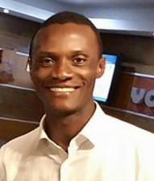

<!DOCTYPE html>
<html lang="en>"></html>
<head>
    <meta charset="UTF-8">
    <meta http-equiv="X-UA-Compatible" content="IE=edge">
    <meta name="viewport" content="width=device-width, initial-scale=1.0"> 
    <title>About Me</title>
    <link rel="stylesheet" href="styles/style.css">
</head>
<body>
    
    <h2>Albert Umaru Pessima</h2>
    <h2>Umar</h2>
    <p>Hello everyone. I am Albert. I have been a member of the Church for the past 19 years. While I currently work as a construction manager, I am pursuing a bachelor’s degree in software development, driven by my passion for working with computers. I enjoy swimming, fishing reading and watching football (soccer). I am married to a beautiful woman with three wonderful children. They are my greatest source of inspiration and support in my journey to change careers and explore the field of web design.</p>

    <p>One of the things I love most about BYU-Idaho is the keen sense of community and the values-based education it offers. The university's emphasis on integrity, faith, and personal growth echoes my own principles. Through my coursework in web design, I hope to not only improve my talents but also gain the knowledge and skills needed to get on a new and exciting career path. As President Thomas S. Monson once said, "the future is as bright as your faith," and I am approaching this transition with steadfast faith in my abilities and the opportunities that lie ahead. Thank you for the opportunity to introduce myself.</p>
</body>
<html>